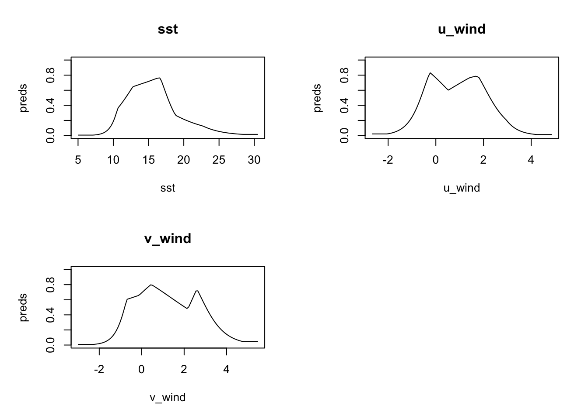
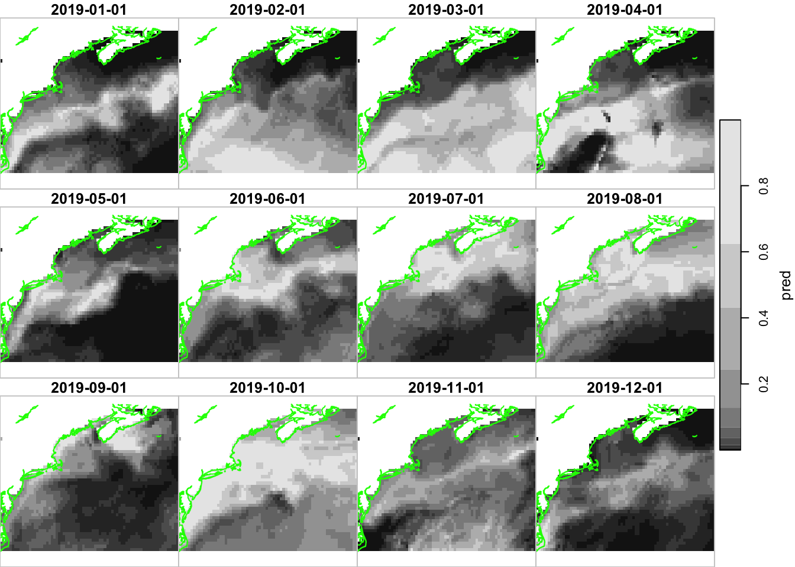
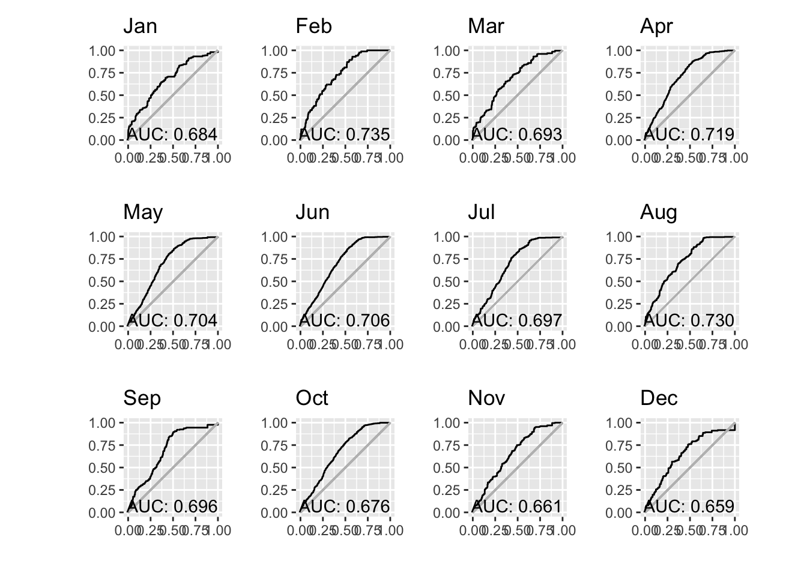

source("setup.R")
obs = sf::read_sf(file.path("data", "obs", "obs-covariates.gpkg")) |>
sf::st_set_geometry("geometry") |>
dplyr::mutate(month = factor(format(month_id, "%b"), levels = month.abb),
.before = geometry)
bkg = sf::read_sf(file.path("data", "bkg", "bkg-covariates.gpkg")) |>
sf::st_set_geometry("geometry") |>
dplyr::mutate(month = factor(format(month_id, "%b"), levels = month.abb),
.before = geometry)Modeling each month
Here we modify our first modeling workflow to produce a model for each month. In the previous workflow we produced one model covering observations covering all times; we then applied the model to the various months.
1 Load data
Here we load the observation and background data points. We add a column identifying the month of the year.
2 Do we model every month?
Let’s do a quick check by counting each by month. Note that we drop the spatial info so that we can make simply tallies.
counts = sf::st_drop_geometry(obs) |>
dplyr::count(month, name = "n_obs") |>
dplyr::left_join(sf::st_drop_geometry(bkg) |> dplyr::count(month, name = "n_bkg"),
by = 'month') |>
print(n = 12)# A tibble: 12 × 3
month n_obs n_bkg
<fct> <int> <int>
1 Jan 33 51
2 Feb 40 57
3 Mar 50 79
4 Apr 341 528
5 May 541 943
6 Jun 2137 3471
7 Jul 2108 3233
8 Aug 1698 2597
9 Sep 725 1205
10 Oct 328 485
11 Nov 494 739
12 Dec 66 90So the colder months have fewer observations than the warmer months. We already knew that, but it will be interesting to see how that manifests itself in the models.
2.1 Build the monthly models
Since we are building 12 models (rather than one) it is useful to create a function that computes a model for any month, and then iterate through the months of the year.
# A function for making one month's model
#
# @param tbl a data frame of one month's observations
# @param key a data frame that holds the current iteration's month name
# @param bkg a complete data frame of background data (which we filter for the given month)
# @param path the path where the model is saved
# @return a model, which is also saved in "data/model/v2/v2.<monthname>"
model_month = function(tbl, key, bkg = NULL, path = "."){
bkg = bkg |>
dplyr::filter(month == key$month) |>
sf::st_drop_geometry() |>
dplyr::select(dplyr::all_of(c("sst", "u_wind", "v_wind"))) |>
na.omit()
obs = tbl |>
sf::st_drop_geometry() |>
dplyr::select(dplyr::all_of(c("sst", "u_wind", "v_wind"))) |>
na.omit()
# these are the predictor variables row bound
x = dplyr::bind_rows(obs, bkg)
# and the flag indicating presence/background
flag = c(rep(1, nrow(obs)), rep(0, nrow(bkg)))
model_path = file.path(path, paste0("v2.", key$month, ".rds"))
model = maxnet::maxnet(flag, x) |>
maxnetic::write_maxnet(model_path)
model
}
path = file.path("data", "model", "v2")
ok = dir.create(path, recursive = TRUE, showWarnings = FALSE)
models = obs |>
dplyr::group_by(month) |>
dplyr::group_map(model_month, bkg = bkg, path = path) |>
rlang::set_names(levels(obs$month))We can look at the response plots for every month, but for demonstration purposes, we’ll just show one month. It is interesting to compare this respinse to that for the basic model.
plot(models[['Jun']], type = 'cloglog')
3 Predict with rasters
First we load the raster databases as these are lightweight to pass into a function that iterates through the months.
3.1 Load the raster databases (sst and u_wind and v_wind)
We also make sure they are in date order and add a “month” variable to each.
sst_path = "data/oisst"
sst_db = oisster::read_database(sst_path) |>
dplyr::arrange(date) |>
dplyr::mutate(month = format(date, "%b"))
wind_path = "data/nbs"
wind_db = nbs::read_database(wind_path) |>
dplyr::arrange(date)|>
dplyr::mutate(month = format(date, "%b"))
u_wind_db = wind_db |>
dplyr::filter(param == "u_wind")
v_wind_db = wind_db |>
dplyr::filter(param == "v_wind")3.2 Iterate through the months making predictions
Now we can build an iterator function that will make a prediction for each month. Let’s narrow our predictions to just those for a particular year, 2019, and read the rasters in all at once.
dates = as.Date(c("2019-01-01", "2019-12-31"))
x = read_predictors(
sst_db = dplyr::filter(sst_db, dplyr::between(date, dates[1], dates[2])),
u_wind_db = dplyr::filter(u_wind_db, dplyr::between(date, dates[1], dates[2])),
v_wind_db = dplyr::filter(v_wind_db, dplyr::between(date, dates[1], dates[2]))
)Now we can iterate through the months.
date_sequence = seq(from = dates[1], to = dates[2], by = "month")
pred_rasters = lapply(names(models),
function(mon){
ix = which(month.abb %in% mon)
predict(models[[mon]], dplyr::slice(x, time, ix, drop), type = "cloglog")
})
pred_rasters = do.call(c, append(pred_rasters, list(along = list(time = date_sequence))))Let’s plot them.
coast = rnaturalearth::ne_coastline(scale = 'large', returnclass = 'sf') |>
sf::st_geometry() |>
sf::st_crop(pred_rasters)
plot_coast = function() {
plot(coast, col = 'green', add = TRUE)
}
plot(pred_rasters, hook = plot_coast)
Let’s see what we can discern from the predict abilities. We can extract the predicted values at the observed locations. Having those in hand allows us to compute pAUC for each month.
pred_obs = stars::st_extract(pred_rasters,
dplyr::filter(obs, dplyr::between(date, dates[1], dates[2])),
time_column = "month_id") |>
dplyr::mutate(month = factor(format(month_id, "%b"), levels = month.abb)) |>
dplyr::group_by(month)
paucs = dplyr::group_map(pred_obs,
function(x, y) {
ix = month.abb %in% y$month
s = dplyr::slice(pred_rasters, "time", ix)
pauc = maxnetic::pAUC(s,x)
dplyr::tibble(month = y$month,
auc = pauc$area,
pauc = list(pauc))
})|>
dplyr::bind_rows() |>
print(n = 12)# A tibble: 12 × 3
month auc pauc
<fct> <dbl> <list>
1 Jan 0.703 <pAUC [3]>
2 Feb 0.689 <pAUC [3]>
3 Mar 0.698 <pAUC [3]>
4 Apr 0.677 <pAUC [3]>
5 May 0.654 <pAUC [3]>
6 Jun 0.662 <pAUC [3]>
7 Jul 0.665 <pAUC [3]>
8 Aug 0.696 <pAUC [3]>
9 Sep 0.663 <pAUC [3]>
10 Oct 0.633 <pAUC [3]>
11 Nov 0.627 <pAUC [3]>
12 Dec 0.665 <pAUC [3]>Note that last element, pauc, is the result returned by the maxnetic::pAUC() function which we can plot.
pp = paucs |>
dplyr::group_by(month) |>
dplyr::group_map(
function(tbl, key){
plot(tbl$pauc[[1]], title = key$month, xlab = "", ylab = "")
}
)
patchwork::wrap_plots(pp, ncol = 4)
Well, it would be easy to become dispirited by this result. It would be reasonable to expect AUC values to improve if we built monthly models rather than a single model applied to any month. But it seems to not be the dramatic improvement hoped for. Darn!